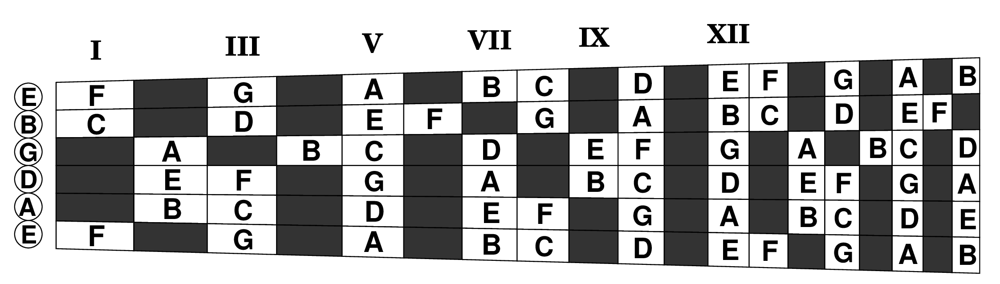

You may have seen fretboard diagrams like the one below that show where the notes are on a guitar fretboard. This one shows just the natural notes and blacks out all the sharps and flats, making it look like a crossword puzzle in a strange language. But it has all the diatonic notes in the key of C, so it should be just what you need to play all the diatonic melodies in this book, right?
Wrong! While diagrams like this may be good for talking about the fretboard and the spatial relationships between notes, they're insufficient and maybe even detrimental for reading music on the fretboard.
The biggest problem is that such diagrams only show the locations of notes on the fretboard, not the locations of those notes on the staff. Instead of solving the main problem (mapping music on the staff into locations you'll remember on the fretboard), they replace it with two problems (naming the notes on the staff, and then locating those names on the fretboard), the first of which is not addressed at all, and the second of which is done incompletely (it doesn't show which octaves are which).
A more subtle yet insidious problem is that ordinary fretboard diagrams may give you the notion of actually looking at your guitar's fretboard while playing, rather than visualizing it in your mind's eye. You see a lot of guitarists with this bad habit, which is tough to break.
When you're sight reading and see a note on the top line of the staff, you need to know immediately where to place your finger on the fretboard in whatever position you are along the neck.
There is no time to recite “Every Good Boy Does Fine” to figure out it's an F, and you clearly can't be reciting the alphabet starting from the well known open string tunings. There's not even time simply to think that in position VII this F is finger number 4 on string 3. But in position V it's finger 2 on string 2. Or in position I it's finger 1 on string 1. No, no, no.
You need to train your brain to associate location on the staff immediately with location on the fretboard in a particular neck position. This is purely a right-brain spatial operation without thinking about the digit “4” or even the letter “F”. Those are left-brain crutches that will just slow you down.
The following “diagram” solves these problems by using music notation to illustrate the location of notes on the guitar fretboard. It looks like the notes you'll read on the staff, but it's arranged spatially like the fretboard, so you can train your brain (and fingers) to know where to play those notes on the fretboard.
Here's how this “music” represents the fretboard.
The six “staves” correspond to the six strings, and the three “measures” correspond to positions I, V and VII, which together cover all the natural notes on the neck below the twelfth fret. Focusing on position I, the first “beat” on each staff shows the notes of the open strings, each labelled conventionally as finger zero (0). The next three beats show the next natural notes on successive frets, or a rest where the note at that fret would be a sharp or flat. The “lyrics” below the staff give the note names that you should sing aloud when learning these notes.
In the standard fingering pattern for any position, the first finger usually takes the notes on the first fret (or “slot”) of that position, the second finger plays the second slot, and so on. Position I is special because you get open strings at the zeroeth fret for free and only need three fingers to cover the remaining natural notes in the scale. Position VII, our other sweet spot, is also special in that all the natural notes of the scale in that range fit into the four slots, so they are easily covered by the four fingers in the standard pattern (note how the finger numbers align in vertical columns corresponding to beats 1 through 4).
Let's read the diagram to see how to play this note of music:

Start by looking at the music (above) and identify where that note is located relative to the staff. In this case, it's on the first ledger line below the staff. Next, look for that same note in, e.g., column VII of the diagram (circled below):
(This copy of the musical fretboard diagram has been condensed to save space by eliminating all the note letter names and fingering numbers, but it still has everything you need to find that circled note on your guitar.)
Now, read the row and slot where that circled note is located within the diagram. Verically, it's in the bottom row, on the staff marked ⑥ meaning it's played on the sixth string. Horizontally, it's in the second of the four finger slots in the position VII column. That means in seventh position you'd play it on the sixth string with your second finger. That would be on fret 8, since your first finger is lined up with fret 7.
So get out your guitar and give it a try. Move your left hand into position VII (i.e. with index finger positioned to play on the seventh fret and your other fingers ready to play on the eighth, ninth and tenth frets). Then use your second finger to play the sixth string at fret 8. That's your note in position VII!
Now let's find that same note when playing in position I:
Position I is special because the first of its four slots is for the open strings, so it only takes three fingers to cover the remaining slots. In this case, our circled note in first position tells you that you'd play it on the fifth string with your third finger, i.e. on the third fret, since your first finger is lined up with fret 1 when playing in first position.
Try playing that that note now on your guitar in first position, placing your third finger on the fifth string, like in the diagram. You should hear the same sound as when you played it before in seventh position.
That's how you read the musical fret board to play a note you see in music notation. And you found how to play it without even needing to know the name of that note, but by seeing its location on the staff and its location(s) in the diagram.
Turns out that note is called “middle C” and you just learned the only two places you can play that note on the guitar. If you're sharp and noticed that this note is also shown the diagram in the position V column, you'll realize that the diagrams for positions V and VII overlap, so it's really the same place on the sixth string (fret 8) but played with different finger slots in different positions (5-6-7-8 in position V but just 7-8 in position VII).
Congratulations and condolences! You have just learned your most important lesson in sight-reading music on the guitar: that there is more than one way to finger the same musical note, and you need a way to choose between them when sight-reading a piece of music.
This is different than many other instruments. When a kid in a band learns to play saxophone, there is just one way to play middle C, and most of the other notes too. They can safely memorize where to put their fingers for each note without later having to “un-memorize” fingerings to play in a different range of their instrument. Even baritone, tenor and alto saxophones use basically the same fingering charts, so middle C always uses the same fingers.
The guitar is more challenging. As you've seen, you can play middle C on two different strings, making it reachable from eight hand positions along the neck, and each position will have its own fingering for that same note. There are even two notes (on the typical 19-fret classical guitar) that can be played on five different strings in 15 positions with 15 different fingerings.
The musical fretboard diagram makes all this manageable by recognizing that just two or three positions/fingerings are enough to cover all the natural notes below the twelfth fret. Positions VII and I are especially easy because the whole diatonic scale across those positions can be played without stretching your fingers beyond the four natural slots. Position V is a close runner up with only one note (B) requiring a stretch.
In fact, these three positions shown in the diagram are so well self-contained that you'll be playing entire scales and songs without changing positions. Turns out, there are more notes available to you going across the neck in one position than there are going up the entire fretboard on any one string, even on a 24-fret guitar. And it's much easier to reach quickly across the fretboard than it is to move your hand the full length of the fretboard.
But the most important part of your most important lesson is that you need to learn at least two positions simultaneously in order for your brain to handle multiple positions. It has to learn from the outset that every note on the staff requires a context, like what position your hand is at, before it can tell your fingers where to play it; just like your middle C experience. You need to be fully aware of the context/position in which you're learning, and the way to force that awareness is to start your learning in two contexts/positions and switch back and forth between them. Play the song in one position and then in the other. This book is organized for you to do that.
Probably the next most important lesson is what you do with your eyes when learning the musical fretboard, or when sight-reading anything. DON'T LOOK AT YOUR FINGERS. EVER. Your eyes will busy on the music, so your fingers must learn to work on their own.
So before picking up your guitar again, start by trying this little finger touching exercise WITH YOUR EYES CLOSED. Hold up your fretting hand as though playing an “air guitar” and touch each finger in succession to your thumb.
Easy, huh? Even with your eyes closed. Now pick up your real guitar and, WITH YOUR EYES STILL CLOSED, do the same thing at any position where you happened to grab the neck; i.e. play the four notes in the slots at that position, and practice changing to neighboring strings and repeating. Teach your fingers to find the strings and slots in a given position without any help from your eyes.
But what about looking in order to change positions? For this book, the answer is still NO! None of the pieces in this book requires a change in position while playing. All you need is to find your starting position, and that can be accomplished without looking by using your ears. There will more on this topic later, but here's how to do it for position VII.
Pick up your guitar and get ready to play, BUT CLOSE YOUR EYES (after reading this step in the instructions, of course). Play the open sixth string, and maybe also the open first string. They're the same note two octaves apart and should sound in tune together. Now use your lefthand index finger to fret a note about two thirds of the way up the neck on the fifth string. If that note sounds in tune with the open first and sixth strings (i.e. the octave in between), then your index finger is right on the seventh fret. If it doesn't match, move up or down on the fifth string until it does. Then you can open your eyes.
You should use this trick to verify position VII every time, after first having taken your best guess at moving there silently. Your body has a way of knowing where your hand is (without looking) and police officers use this to gauge drunkeness (“Close your eyes and touch your nose.”). Eventually your position guesses will improve.
Now you're ready to learn the music fretboard. Obviously you're not going to consult the diagram note-by-note through a song while sight reading. Instead, you're going to study (and remember by sight) parts of the diagram that will allow you to play those notes immediately in any song you choose to read.
Let's set the goal of being able to sight-read this little tune in positions VII and I without ever taking your eyes off it; not to look at the fretboard, not to place your fingers, not to switch positions, not even to consult the diagram while you're sight-reading.
Instead of trying to memorize the whole musical fretboard diagram for two positions, we'll start with the minimum needed for this piece. Look at the range of notes in this tune, from low to high. It starts with the note you already learned, middle C, which is also the lowest. The highest is a few notes later; the one in the space just below the middle of the staff. That's the range we'll learn first.
To learn these notes in position VII, focus on the lower right corner of the musical fretboard diagram. Recognizing the high and low notes by their appearance, we identify the range of notes we want to learn (circled below).

Pick up your guitar and move to position VII without looking (as you learned in the previous section: finger 1 on string ⑤ until it's in tune with open string ⑥ ).
With your eyes focused intently on the circled notes, find and play the lowest one, the middle C you found before. Remember how? Read the string (⑥ ) and the slot (second) where that note is located on the diagram, and move that finger to that string and play the note.
Go on to the next higher note in the diagram, the one just below the lowest line of the staff. Still the same string but in the fourth slot. Play it with your fourth finger.
The next higher note in the scale is on the next string; we're going across the neck to follow the scale without changing position. String ⑤ slot 1; play the note. This is the tuning note you played before to verify you were in seventh position. Remember what it looks like on the staff (on the lowest line). You may also be ready to remember that this note is an E, just like the tuning of the open sixth and first strings.
This is where you should be committing these fingerings to memory. You may want to go back and forth on just these three notes, in any order you choose to play them, noticing how they look on the staff every time you place your finger to play them. It will sink in.
Let's also look at how these same notes are fingered in position I. Here is the relevant portion of the musical fretboard diagram for these notes.
Right away you notice again that only three fingers are needed in this position because of help from the open string notes, labeled above with a “0”. You should also notice that these are not the same strings as in position VII; when you shift to a lower position, the notes will be more toward the high side of the fretboard. Another difference is that the index finger has no notes to play here; in this part of the diagrm, it's all second and third fingers plus the open strings.
By now, you're probably so used to reading which fingers to play that you could play this scale of six notes just by reading the diagram (and without looking at your fingers!). Give it a try. Stare at the diagram while you're doing it and let it guide you.
The work here, however, is to form memorable associations about these notes and where they are located in this position. Two of them are open strings, so you already know their names: D and G (in the “0” column). Middle C you already met, and the note after D is the same E pitch you met when finding position VII with your first finger. But here in first position that E is played with the second finger. So you might remember “second finger E” as a way to verify you're first position.
If you've ever played chords in first position, there are two common chords present in these six notes. Use your second and third fingers to play the E and middle C, respectively, then also play the open G (remember which one?). These three are located on neighboring lines of the staff, starting with middle C. That's a C major triad. Play them together, or in succession as an arpeggio:
The other chord is made from the other three notes of our six, and they are in neighboring spaces on the staff, starting with D. In this position, two of them are on the same string here, so you have to play them in sequence. Start with the D (open, remember?). In the music, it's hanging in the space just below the staff. Our other two that go nicely with this D are on the next two spaces in the staff, so you have to skip over the E line and the G line to get to them on the staff. Similarly you skip up the strings, but by different amounts. Coming after E and G, those notes are named F and A. Together with the D they make the D minor triad. Play them in succession to hear this simple minor triad:
Now go back to seventh position (remember “first finger E in seventh position)” where you can play these same two triads. Only now it's the D minor triad that you can play all at once (try it: D F A) while the C major triad has to be played like an arpeggio (middle C E G). The notes are still in the same place on the staff, of course, even though they're at different fingerings. But you're dealing with that, right?
Congratulations! You've just now played the same music (the two triads) in two different positions on the fretboard. And the notes of those two triads are a useful way to remember the names of the lines and spaces in this part of the staff. Now you've got friends in this neighborhood (major CEG and minor DFA) that you will meet again and again as you read more music.
Here again are the notes you've learned how to play on the diagram:
Now play our little tune, starting in seventh position (and get there without looking!). While focusing on the first note in the music (and without looking at your fingers or the fretboard) start by remembering which slot middle C is in when you're playing in seventh position. Try to remember what you learned from the musical fretboard diagram without looking at it either, unless you get stuck. This is the real test of what you've learned.
Also play this tune in first position, now that you undoubtedly recognize the old French melody as “Ah Vous Dirai-je Maman” as popularized by Mozart's variations in 1782. No? Then perhaps in English as “The Alphabet Song” (1835) or “Baa, Baa, Black Sheep” (1744). No? Oh, yes, then perhaps as “Twinkle, Twinkle, Little Star” (1806).
If at first you don't succeed (and even if you do), try again tomorrow. You're building biological connections within your brain when you memorize something, and that takes time and reinforcement. Be patient with yourself; this is a significant leap in learning the fretboard, as you can see from all the circled notes on the diagram. But it's knowledge that will last you a lifetime.
Any music that you can play both in first and seventh positions can also be played in fifth, but maybe not as conveniently.
The B note at the middle line of the staff is not available in any of the four slots of the standard pattern in position V, so you either have to stretch finger 4 higher on the fourth string or finger 1 lower on the third string to play this “extension note.”
On the other hand, once you've learned seventh position you already know where over half of the notes are in fifth position, since the upper half of fifth overlaps with the lower half of seventh, although with different fingers.
The worst positions for the key of C are positions VI, VIII and XI, each having the maximum of four extension notes. When you play in those positions, the extensions scream out that you should just move to one of the neighboring positions.
You can see this in the diagram above for position VI, where fingers 1 and 4 are mostly stretching outside of their assigned slots.
For any extension note you always have two choices: finger 1 can stretch lower on the neck or finger 4 can stretch higher up the neck; player's choice. The changing space between frets means stretching low is farther than stretching higher. But finger 1 is usually longer and stronger than finger 4. Well, there's another choice: move to a neighboring position.
Once you're used to playing confidently in seventh and first positions, you'll be ready for other positions. At first, each new position may feel like playing a different instrument with different fingerings. But as you begin to play in positions that overlap with your comfort zones, it will get easier and easier to play in other positions, if the piece is suitable.
That's when this “unified” diagram may prove helpful as a reference (i.e. after you've already learned the main positions). It shows all the natural notes on the neck, from the open strings though the 13th fret, and has markers at all the odd numbered positions. This allows you to visualize playing at any position along the neck.
For example, to see the fingering extensions needed for third position, imagine playing the four finger slots beginning at the III (i.e. frets 3 through 6, as shown in the diagram below) and visually follow the scale up from the lowest note (string ⑥ slot 1). Find the subsequent notes either by the note names in alphabetic order or by the rising notes positions relative to the staff, alternating spaces and lines. The answers are circled below, revealing three extension notes that require stretching one way or the other.
Notice that there is never an extension note between strings ② and ③ in this or any other position, since the tuning difference between those two strings only amounts to 4 frets, which is always covered by the 4 slots of any position.
Now imagine, using the diagram above with all the circles, what it would be like to play in second position. Move the fingers down (i.e. left) one fret and see how much better the circles line up with the slots. You should see only one extension note, the “f”, between strings ① and ②. The three extensions we had in third position are now handled by the first finger in second position.